Table of Contents
- Optimization-based Nonlinear Controller Design Techniques
- Development of A Novel Humanoid Robot System
- A Small Humanoid Robot System Development and Research
- Cognitive Robot Research
- Embedded Active Vision System based on DSP
- Ship Motion Extremely Short-time Modeling and Prediction
- Other projects
- H.264 Video Decoder Development
- Multiple Graphic Processing Unit Support Techniques Development
- Bus Interface Unit Development
- Document Management Software for MS Windows
- Large LED Screen Display Control Board
- ADN Switch Ground Tool Requirement Development for COMAC C919
- High Integrity Avionics Data Network Development for COMAC C919
1 Optimization-based Nonlinear Controller Design Techniques
- Time: 2008/9–2010/9
- Location: In Prof. C. Atkeson's Lab., Robotics Institute, Carnegie Mellon University, Pittsburgh, PA, U.S.
- Project Description:
- Joint-educate PhD program for two years, sponsored by China Scholarship Council. The work was also supported in part by the National Science Foundations of US.
- Development Tools: gcc, Visual C++, Matlab, SDFAST
- Hardware: Sarcos hydraulic humanoid, Push sensor
- Programming Language: C/C++ and Perl
- Responsibilities: To study optimization-based control technique and implement controllers for standing balance and biped walking for Sarcos hydraulic humanoid in CMU.
- Accomplishments:
- Publications:
- [Book] Chapter 1: Trajectory-based dynamic programming, Christopher G. Atkeson and Chenggang LIU, Modeling, Simulation and Optimization of Bipedal Walking Cognitive Systems Monographs Volume 18, 2013, pp 1-15, DOI: 10.1007/978-3-642-36368-91
- [Journal] Biped walking control using a trajectory library, Chenggang LIU, Christopher G. Atkeson, and Jianbo SU, Robotica, Volume 31 Issue 2, March 2013, Pages 311-322, Cambridge University Press New York, NY, USA, DOI: 10.1017/S0263574712000203
- [Journal] Neighboring optimal control for periodic tasks for systems with discontinuous dynamics, Chenggang LIU, Christopher G. Atkeson, and Jianbo SU, SCIENCE CHINA Information Sciences, 2011, 54 (3): 653-663. DOI: 10.1007/s11432-011-4185-z
- [Conference] Implementation of a trajectory library approach to controlling humanoid standing balance, Chenggang LIU and Jianbo SU (2011), Systems, Man, and Cybernetics (SMC), 2011 IEEE International Conference on, DOI: 10.1109/ICSMC.2011.6083884
- [Conference] Biped walking control using offline and online optimization, Chenggang LIU and Jianbo SU, Control Conference (CCC), 2011 30th Chinese, 22-24 July 2011
- [Conference] Standing Balance Control of a Humanoid Robot In the Presence of Continous Perturbations (in Chinese), Chenggang LIU and Jianbo SU, Control Conference (CCC), 2011 30th Chinese, 22-24 July 2011
- [Conference] Standing balance control using a trajectory library, Chenggang LIU and Christopher G. Atkeson, Dynamic Walking, 2009.
- [Conference] Standing balance control using a trajectory library, Chenggang LIU and Christopher G. Atkeson(2009), Intelligent Robots and Systems, 2009. IROS 2009. IEEE/RSJ International Conference on, 2009, 3031-3036. DOI: 10.1109/IROS.2009.5354018
- Publications:
- Demonstrations:

Figure 1: Sarcos Humanoid Robot
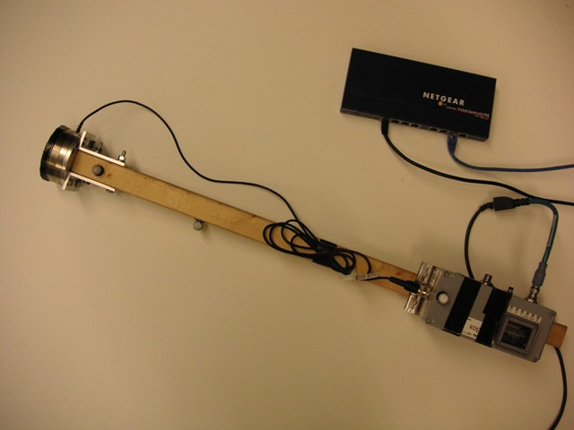
Figure 2: Push Sensor
Standing Balance Control Using a Trajectory Library Experiment on YouTube
2 Development of A Novel Humanoid Robot System
- Time: 2009/3–2009/6
- Location: In Seedrid, Inc., Pittsburgh, PA, U.S.
- Project Description:
This project was supported by a Korea company, Seegrid (US), and CMU (US). The aim was to develop controllers for a cable-driven humanoid robot.
- Development Tools: TI Code Composer Studio, Visual C++, Matlab
- Hardware: A new developed humanoid robot lower body
- Programming Language: C/C++
- Responsibilities: Load sensor calibration, electronic noise analysis, digital filter design, physical parameter identification, implementation of gravity compensation control and zero torque control.
- Demonstrations:
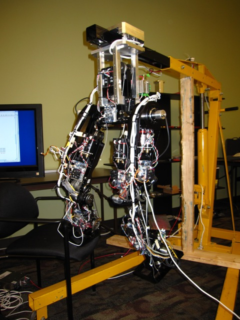
Figure 3: The lower body
3 A Small Humanoid Robot System Development and Research
- Time: 2006/9–2008/9
- Location: Research Center of Intelligent Robotics, Shanghai Jiao Tong University, China
- Project Description:
- It was supported by National Natural Science Foundation and New Century Excellent Talents in Universities of China. The aim was to implement a small full-body humanoid robot that can performs various tasks.
- Hardware: a humanoid robot, F2812 DSP, CAN
- Programming Languages: C/C++
- Development Tools: TI Code Composer Studio (CCS) for F2812 programming, Protel for PCB design, MS Visual Studio form high-level software programming, Matlab for simulation and algorithm validation.
- Responsibilities: As the project leader took charge of control system architecture, design and implementation of the motor control subsystem, system integration and biped waking experiment.
- Accomplishments:
- Publications:
- [Journal] Design and Implementation of Motor Control System for Small Humanoid Robot (in Chinese), ZHANG Yi, LIU Cheng-gang, XING Deng-peng, COMPUTER ENGINEERING, 2009, 35(24). DOI: 10.3969/j.issn.1000-3428.2009.24.082
- Patents:
- Electric Wire Driven Actuator for Artificial Joint, ZL200710038296.6 (Issued)
- General Distributed Control System for Humanoid Robots, ZL200910054322.3 (Issued)
- Distributed Dual-bus Motion Control System for Humanoid Robots, 200810038844.X (Published)
- Publications:
- Demonstrations:
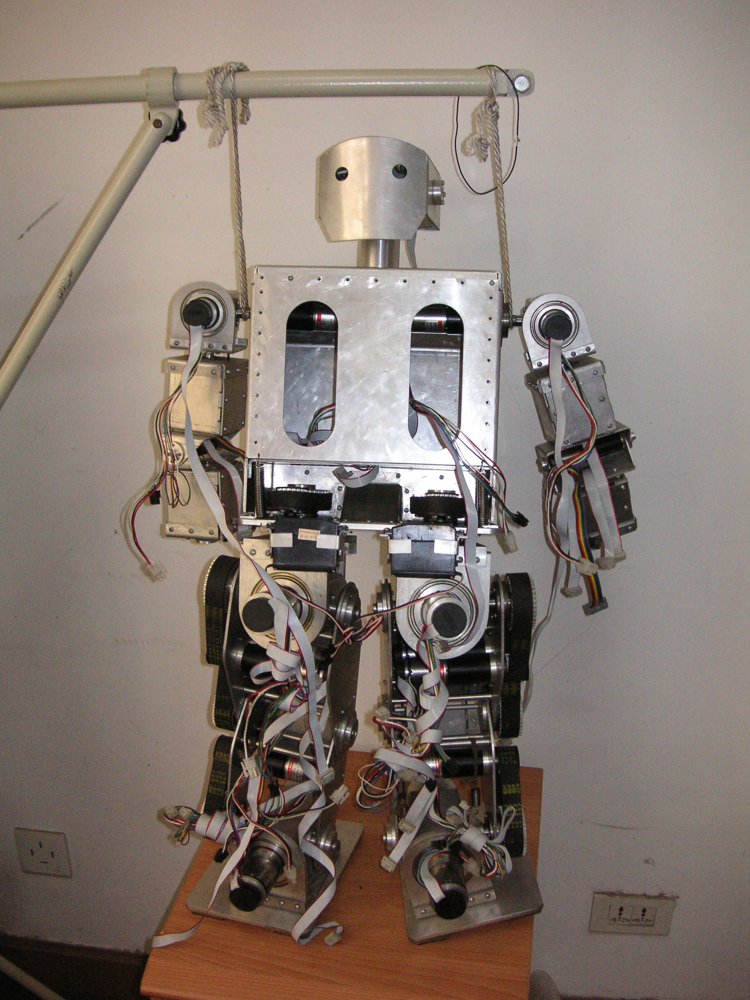
Figure 4: The robot
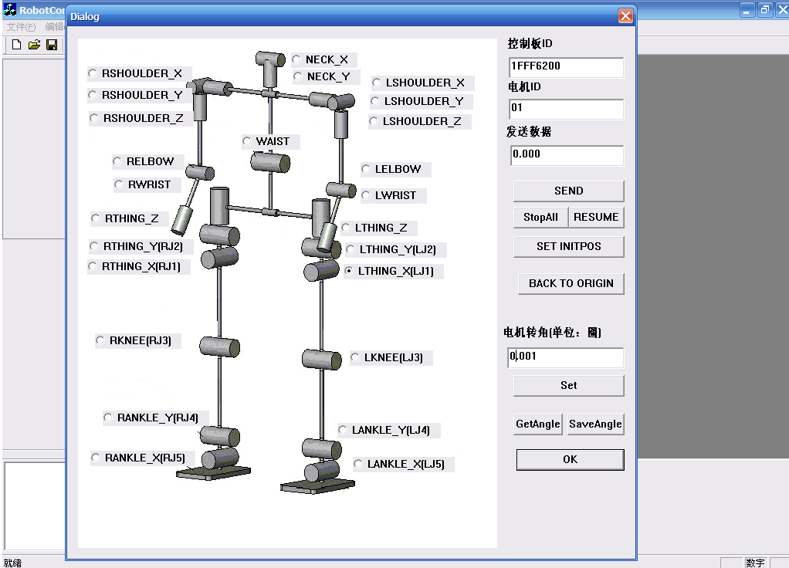
Figure 5: GUI
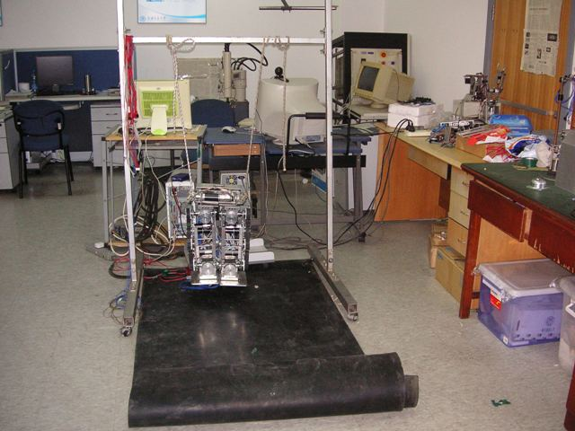
Figure 6: Experiment Environment
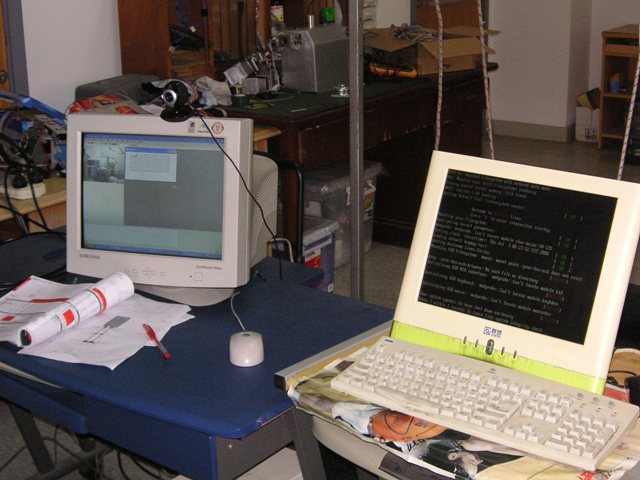
Figure 7: The control console
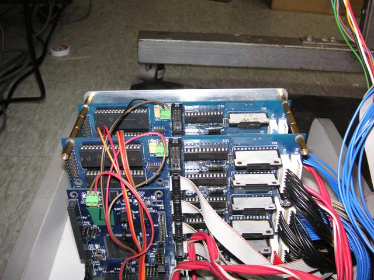
Figure 8: The motor drive board
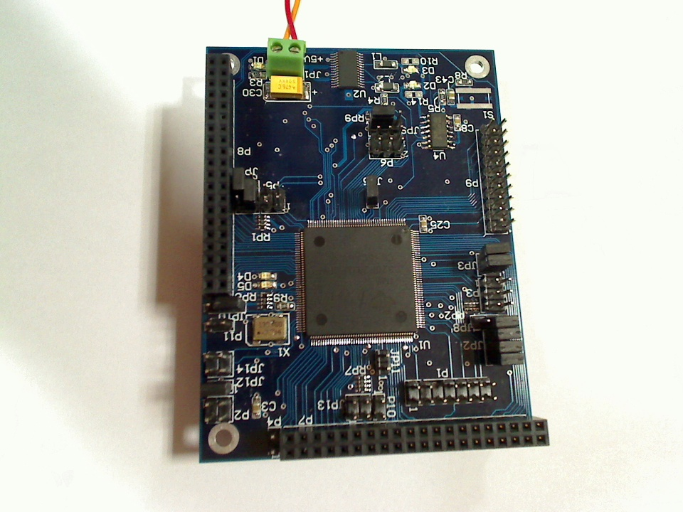
Figure 9: The brushless DC Motor control board
4 Cognitive Robot Research
- Time: 2006/9–2007/9
- Location: Research Center of Intelligent Robotics, Shanghai Jiao Tong University, China
- Project Description:
- This study aims to use the sensory-motor map to generate basic behavior controls with multiple sensors.
- Programming Language: C/C++
- Hardware: TI F2812 DSP, step motors, PC, title sensor, electronic compass, CCD Camera, RS232, CAN bus
- Development Tools: CCS (TI Code Composer Studio), VC (Visual Studio) 6.0, Matlab, OpenCV
- Responsibilities: Proposed and implemented Basic behavior acquisition with multisensor integration algorithm and the whole experiment system.
- Accomplishments:
- Publications:
- [Journal] Basic Behavior Acquisition with Multisensor Integration for a Robot System , Chenggang LIU and Jianbo SU, Advanced Robotics, 2009, 23 (12-13), 1561-1578. DOI: 10.1163/016918609X12496339824450
- [Conference] Basic behavior acquisition based on multisensor integration of a robot head, Chenggang LIU and Jianbo SU, Robotics and Automation, 2008. ICRA 2008. IEEE International Conference on, 2008, 3094-3099. DOI: 10.1109/ROBOT.2008.4543681
- Publications:
- Demonstrations:
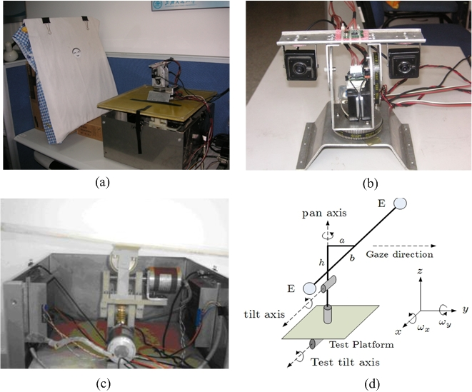
Figure 10: Experiment Environment
Experiment for Basic behavior acquisition with multisensor integration on YouTube (1)
Experiment for Basic behavior acquisition with multisensor integration on YouTube (2)
5 Embedded Active Vision System based on DSP
- Time: 2001/9–2003/3
- Location: Research Center of Intelligent Robotics of Shanghai Jiao Tong University, China
- Project Description:
- An active vision system is one that can manipulate the viewpoint of the camera(s) in order to investigate the environment and get better information from it. The project aims to develop an high performance embedded active vision system that can fulfill some challenge active vision tasks, such as tracking fast moving objects.
- Programming Languages: Assembly language and C
- Hardware Languages: VHDL
- Development Tools: TI Code Composer Studio (CCS) for TMS320C6711 DSP programming, Protel for PCB design, Keil C51 for C51 MCU programming, AutoCAD for the mechanism design and MAX+PLUS for Altera's CPLD
- Responsibilities: Took charge of the whole project which includes implementation of image capture/processing/display hardware, the step motor control hardware, the pan/tilt camera mechanism and object recognition and tracking software.
- Accomplishments:
- Publications:
- [Journal] Step Motor Control Strategy in High Speed Pan/Tilt/Zoom Camera System (in Chinese), Chenggang LIU, Jianbo SU, Electric Automation, 2002
- [Journal] General Active Vision System based on DSP (in Chinese), Yongmei LIU and Chenggang LIU Electronic Design Engineering, May 16, 2013
- Patents:
- Camera System for Auto-detecting and Tracking Suspicious Subjects, ZL03116154.5 (Issued)
- Publications:
- Demonstrations:
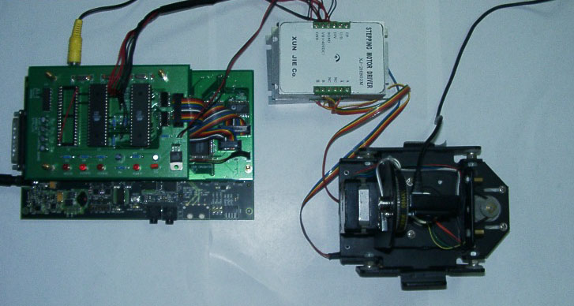
Figure 11: Top View of the Prototype System
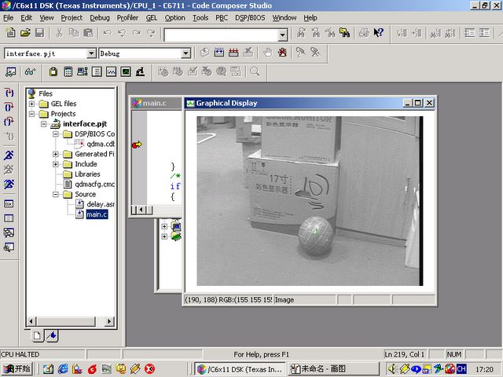
Figure 12: Debug Interface
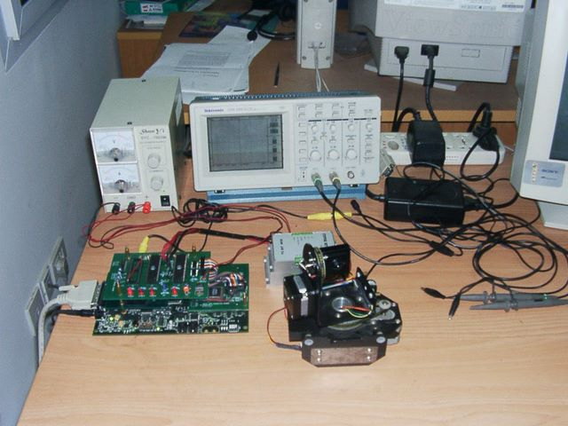
Figure 13: Experiment environment
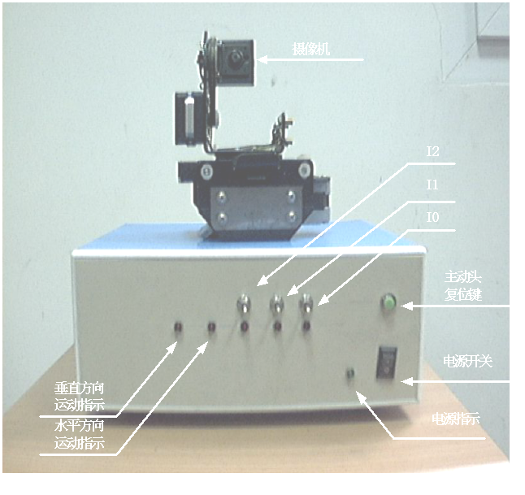
Figure 14: Front Panel Interface
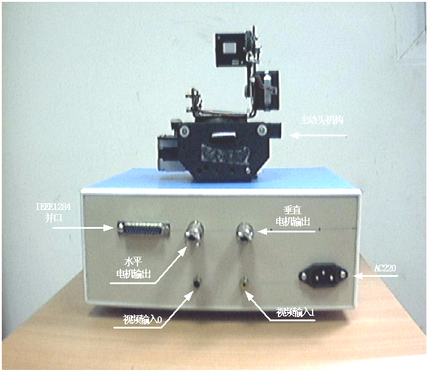
Figure 15: Back Panel Interface
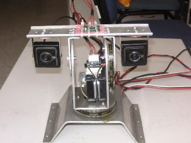
Figure 16: Final Mechanism
6 Ship Motion Extremely Short-time Modeling and Prediction
- Time: 2000/1–2000/8
- Location: Harbin Engineering University, Harbin, China
- Project Description:
- Ship-motion prediction will be very useful for several naval operations such as aircraft landing, cargo transfer, off-loading of small boats, and ship 'mating' between a big transport ship and some small ships. Five to ten seconds ship motion prediction can give the operator time to avoid serious collisions. For this purpose, this real-time ship motion forecast software can predict the ship motion for 10 to 20 seconds based on the measurements in the past. As Bachelor thesis project, it aims to implement a real-time on-line forecast software for ship motion extremely short-time prediction and integrate with CSSRC (China Ship Scientific Research Center), Wuxi, China,
- Programming Language: C++
- Development Tools: Visual Studio 6.0
- Interface: Ethernet and RS232
- Requirements:
- Communication Interface: Serial ports
- Computational Time per one forecasting: Less than 100 ms
- Forecast Step Length: Between 1 and 20
- Easy to be integrated with different algorithms
- Use friendly interface
- Responsibilities:
- Implemented the on-line forecast software using VC 6.0.
- Integrated with the forecast system in CSSRC.
- Accomplishments:
- Implemented standard Auto-Regressive algorithm, Periodogram Estimation algorithm, and their combination.
- Real-time (100ms) forecast of three motion variables for maximum 20 step
- Integrated the software with the forecast system at China Ship Scientific Research Center, Wuxi, China (CSSRC).
- Demonstrations:
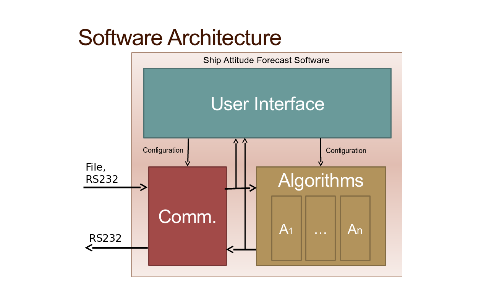
Figure 17: Software Architecture
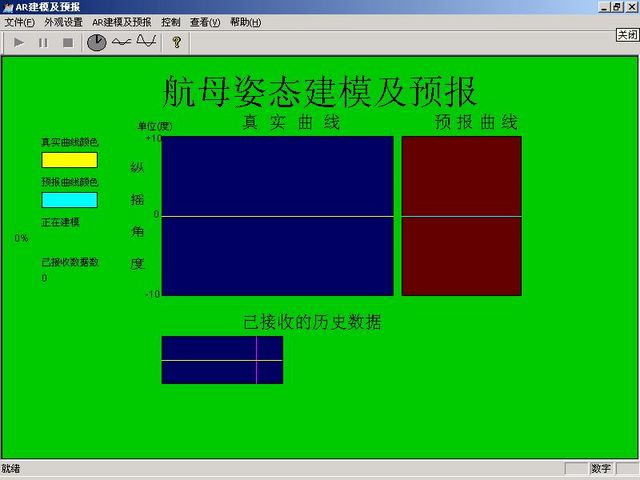
Figure 18: Right after starting up, It needs to receive 200 data to build up the model
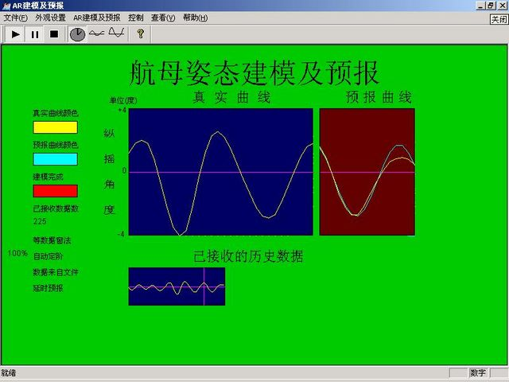
Figure 19: After building up the model, it starts to predict as while as update the model
7 Other projects
7.1 H.264 Video Decoder Development
- Time: 2005.12-2006.3
- Title: Hardware engineer, VIA Technologies, Inc., Fremont, CA, U.S.
- Responsibilities: Took charge of RTL coding, verification and synthesis of the Context-Adaptive Variable Length Coding block and the Context-Based Adaptive Binary Arithmetic Coding block.
7.2 Multiple Graphic Processing Unit Support Techniques Development
- Time: 2005.3-2005.6
- Title: Hardware engineer with VIA Technologies, Inc., Fremont, CA, U.S.
- As a hardware engineer, took charge of building the test bench, hardware emulation, RTL coding, synthesis and verification for the bus interface units.
- Accomplishments:
- Patents:
- Method and System for Multiple GPU Support, ZL200610128006.2 (Issued)
- Method and System for Multiple GPU Support, ZL200610110751.4 (Issued)
- Method and System for Multiple GPU Support, U.S. Patent Pending 20070139423
- Patents:
7.3 Bus Interface Unit Development
- Time: 2003.3-2006.8
- Title: Hardware engineer with S3 Graphics, Inc., Shanghai, China
- Responsibilities: Took charge of RTL coding, synthesis and verification of AGP, PCI and PCI-E bus interface units on Graphic Processing IC for several products.
7.4 Document Management Software for MS Windows
- Time: 2004
- I did this just for fun!
- Description:
If I am a programmer of Microsoft, the first thing I want is to update its File Management System (FMS) for Windows OS. Under Windows 2000/XP, files can only have one name, belong to one folder, have very limited properties. These shortcomings force me to write this program. It was written completely with Visual Basic 6.0 and has been tested for more than one years. The idea is to manage files using a database engine, which will enable you to organize files by logic groups and to search much faster by a lot of means.- Development tools: Visual Basic 6.0
- You can find more details and download the source code HERE
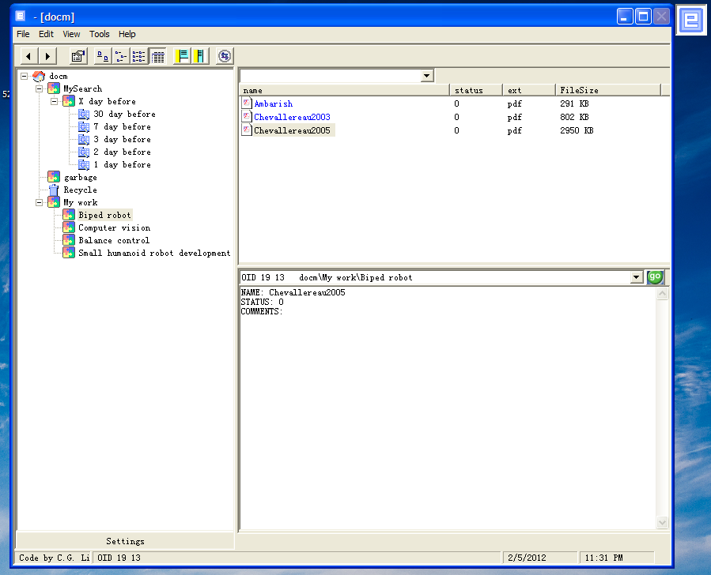
Figure 20: GUI
7.5 Large LED Screen Display Control Board
- Time: 2002/8–2002/10
- Location: Yuehao Electronic Co., Ltd., Shanghai, China
- Project Description:
- This is my part time job. The aim is to develop a large LED screen display control hardware.
- Programming Language: Keil C51
- Hardware: C51 MCU, ALTERA CPLD
- Development Tools: Protel for PCB design, Keil C51 for C51 MCU programming, MAX+PLUS for ALTERA CPLD
- Responsibilities: Implemented the whole the hardware with C51 MCU and ALTER CPLD.
- Demonstrations:
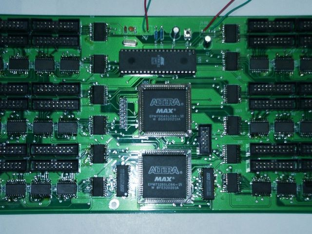
Figure 21: LED Screen Display Control Board
7.6 ADN Switch Ground Tool Requirement Development for COMAC C919
- Time: 2013.1-2013.10
- Title: System engineer with GE-AVIC Civil Avionics Systems Co. Ltd., Shanghai, China
- Description: ADN stands for Avionics Data Network. ADN Switch Ground Tools include Switch Configuration Tool (SCT) and Switch Network Analysis Tool (SNAT).
- Responsibilities:
- Led the development activities which include WBS (Work Break Down) and setting up schedule; leading technique/review meetings with internal and external stakeholders; delivering SCT/SNAT requirement and Interface Control Document on time.
7.7 High Integrity Avionics Data Network Development for COMAC C919
- Time: 2011.5-2013.10
- Title: System engineer with GE Aviation and GE-AVIC Civil Avionics Systems Co. Ltd., Shanghai, China
- Description: High integrity ADN is one of the three critical parts of Integrated Modular Avionics.
- Responsibilities:
- Worked with US' experts to develop requirements, architecture and ICD for Data Transport function and Network Management.
- Led ADN Switch requirement development activities in China, including setting up ABM, coordinating the development activities among teams and leading the effort to requirement review and approve.
- Supported Product Management activities, including developing and maintaining the Statement of Work, communicating with suppliers and coordinating PDR/CDR meetings.